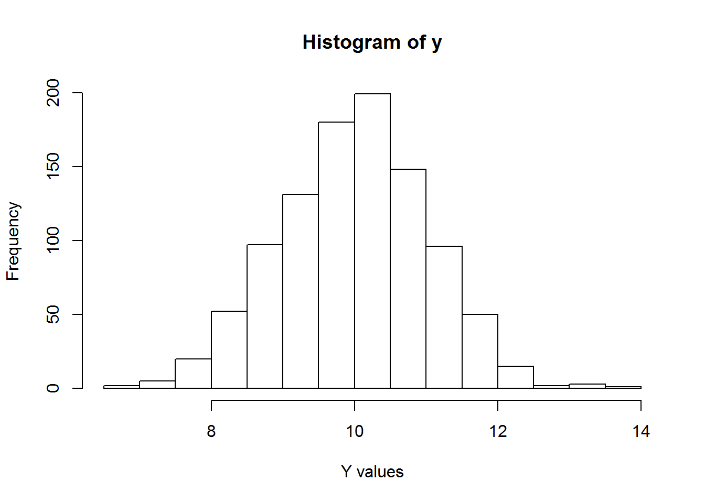

Y with 1001 stochastic replicates for a normal distribution with mean 10 and standard deviation of 1.Y and assign them as Y_mean and Y_sd respectively.Y, labeling the x-axis as Y values and the y-axis as FrequencyCalculate the probability that Y is less than 11. (HINT: you can use the sort() function to sort a vector in ascending order; ?sort)
n<-1001
true_mn<-10
true_sd<-1
y<-rnorm(n,true_mn,true_sd)
mean(y)## [1] 9.992288sd(y)## [1] 1.033317Y_mean<-mean(y)
Y_mean## [1] 9.992288Y_sd<-sd(y)
Y_sd## [1] 1.033317hist(y,xlab="Y values", ylab="Frequency")
sort(y) # I can find which value is less than 11 and divide## [1] 6.868621 6.988495 7.044707 7.394613 7.416022 7.441703
## [7] 7.463224 7.542276 7.569854 7.588902 7.598846 7.698288
## [13] 7.731422 7.732026 7.738294 7.759902 7.766529 7.782967
## [19] 7.799641 7.831997 7.835125 7.880083 7.881778 7.914449
## [25] 7.950964 7.993626 7.998405 8.014954 8.018332 8.028547
## [31] 8.029089 8.042914 8.073851 8.101455 8.117711 8.136305
## [37] 8.148061 8.148577 8.153647 8.169397 8.176634 8.207632
## [43] 8.213228 8.224044 8.224273 8.242958 8.250016 8.256030
## [49] 8.257523 8.265987 8.283992 8.285211 8.304681 8.306416
## [55] 8.313659 8.324769 8.327465 8.342626 8.346815 8.349024
## [61] 8.366971 8.367959 8.393643 8.398971 8.404752 8.405829
## [67] 8.406378 8.408542 8.409746 8.415957 8.420082 8.426166
## [73] 8.438127 8.445910 8.449212 8.451015 8.475639 8.486217
## [79] 8.491511 8.500713 8.503232 8.505840 8.506874 8.514294
## [85] 8.514939 8.518155 8.520291 8.527509 8.537504 8.538887
## [91] 8.539956 8.548424 8.550127 8.550714 8.560057 8.582369
## [97] 8.585838 8.590071 8.595581 8.596457 8.600734 8.614658
## [103] 8.616811 8.620210 8.622800 8.647426 8.650843 8.653395
## [109] 8.657919 8.670078 8.677793 8.679562 8.682626 8.687638
## [115] 8.689661 8.707030 8.719472 8.725544 8.725704 8.739699
## [121] 8.752376 8.752541 8.752917 8.754887 8.756386 8.760222
## [127] 8.760325 8.767438 8.783077 8.783461 8.790747 8.792008
## [133] 8.799687 8.806032 8.814863 8.821372 8.824653 8.826340
## [139] 8.832233 8.832705 8.833823 8.836674 8.837370 8.837589
## [145] 8.845850 8.850436 8.851322 8.858111 8.868866 8.871246
## [151] 8.871802 8.872403 8.878211 8.886406 8.894166 8.894808
## [157] 8.898167 8.902400 8.905460 8.906667 8.906944 8.911124
## [163] 8.911129 8.912171 8.915401 8.945148 8.946281 8.959275
## [169] 8.960110 8.967298 8.968923 8.973249 8.977167 8.978439
## [175] 8.984503 8.993229 9.007889 9.014734 9.015409 9.020683
## [181] 9.023223 9.024175 9.038994 9.041881 9.042433 9.042735
## [187] 9.043206 9.043700 9.044576 9.048021 9.048705 9.049149
## [193] 9.052338 9.060154 9.068815 9.069983 9.076346 9.086103
## [199] 9.101055 9.117689 9.119570 9.122454 9.122792 9.122881
## [205] 9.126199 9.127356 9.133630 9.135672 9.144721 9.144806
## [211] 9.146193 9.147030 9.147876 9.152650 9.158134 9.167421
## [217] 9.169354 9.176562 9.181132 9.183224 9.187638 9.187820
## [223] 9.193445 9.198275 9.200273 9.203628 9.204167 9.206988
## [229] 9.206991 9.215422 9.219232 9.220446 9.220537 9.223949
## [235] 9.229241 9.229442 9.231174 9.239818 9.242835 9.243967
## [241] 9.245000 9.250309 9.253333 9.255688 9.258767 9.260863
## [247] 9.270047 9.270655 9.277706 9.278952 9.279903 9.284987
## [253] 9.289742 9.292807 9.301148 9.306762 9.311429 9.322713
## [259] 9.324926 9.330236 9.336853 9.337460 9.337516 9.339019
## [265] 9.345625 9.353545 9.355919 9.358471 9.361773 9.366281
## [271] 9.371511 9.371521 9.373044 9.373599 9.374688 9.384101
## [277] 9.395061 9.397257 9.399339 9.402457 9.403250 9.406943
## [283] 9.409176 9.414031 9.429554 9.435303 9.438583 9.440383
## [289] 9.441349 9.443300 9.444276 9.445878 9.456397 9.468180
## [295] 9.475465 9.475625 9.476898 9.478075 9.478245 9.481927
## [301] 9.483076 9.483450 9.488375 9.491722 9.492241 9.493466
## [307] 9.494748 9.501654 9.508174 9.512423 9.514168 9.516653
## [313] 9.520527 9.520597 9.521955 9.522948 9.525445 9.526249
## [319] 9.531482 9.536343 9.539381 9.541490 9.542370 9.545392
## [325] 9.546461 9.547045 9.547638 9.553349 9.555091 9.556185
## [331] 9.558164 9.558218 9.558605 9.569572 9.570111 9.571360
## [337] 9.574380 9.577448 9.578609 9.579522 9.589575 9.599983
## [343] 9.601125 9.602017 9.603830 9.604077 9.611810 9.615745
## [349] 9.616596 9.618271 9.622235 9.622957 9.628463 9.629007
## [355] 9.630354 9.630388 9.634772 9.636284 9.636426 9.637321
## [361] 9.642983 9.644495 9.646226 9.653449 9.655944 9.656734
## [367] 9.662482 9.664128 9.667110 9.676110 9.677533 9.677614
## [373] 9.681099 9.686275 9.686403 9.690458 9.696073 9.701701
## [379] 9.701989 9.704383 9.706416 9.713168 9.713318 9.714178
## [385] 9.720607 9.721749 9.723996 9.724085 9.725666 9.728186
## [391] 9.729341 9.730102 9.730574 9.735292 9.737909 9.738327
## [397] 9.740193 9.740855 9.741122 9.741716 9.742843 9.750053
## [403] 9.750164 9.751376 9.752409 9.754298 9.755013 9.765960
## [409] 9.769694 9.772956 9.773079 9.777454 9.777550 9.778165
## [415] 9.779171 9.782803 9.783724 9.787862 9.788758 9.792055
## [421] 9.792680 9.797552 9.799552 9.800179 9.801469 9.808240
## [427] 9.809757 9.813242 9.824261 9.826628 9.828383 9.829444
## [433] 9.832118 9.834665 9.840454 9.842421 9.844220 9.844288
## [439] 9.845414 9.850374 9.850927 9.854548 9.855003 9.857051
## [445] 9.861422 9.863040 9.867248 9.869953 9.872136 9.880949
## [451] 9.887966 9.890765 9.893682 9.899608 9.900275 9.902070
## [457] 9.903520 9.910464 9.912651 9.913881 9.919324 9.926533
## [463] 9.927675 9.932636 9.932951 9.937531 9.938285 9.948945
## [469] 9.950329 9.951874 9.957806 9.961519 9.968196 9.969310
## [475] 9.970075 9.972630 9.974409 9.974935 9.977484 9.979007
## [481] 9.979586 9.982122 9.988857 9.988942 9.989530 9.995969
## [487] 9.998327 10.004804 10.005356 10.008146 10.008229 10.009264
## [493] 10.011771 10.019014 10.019520 10.021577 10.026450 10.028546
## [499] 10.035593 10.035902 10.039732 10.042119 10.044666 10.044971
## [505] 10.051408 10.053085 10.053363 10.055658 10.058136 10.066546
## [511] 10.069706 10.071172 10.071475 10.072135 10.072147 10.072966
## [517] 10.073019 10.075194 10.077856 10.078161 10.079808 10.081850
## [523] 10.086576 10.086915 10.087819 10.092107 10.095515 10.097693
## [529] 10.099770 10.100142 10.100617 10.102503 10.102875 10.105087
## [535] 10.107966 10.111812 10.113787 10.114905 10.115612 10.128517
## [541] 10.129551 10.130749 10.131470 10.132952 10.134089 10.134195
## [547] 10.134360 10.134772 10.143699 10.147733 10.148380 10.148604
## [553] 10.148971 10.150291 10.152189 10.152789 10.152831 10.153694
## [559] 10.158670 10.164770 10.169992 10.173067 10.175208 10.176930
## [565] 10.181201 10.181201 10.185035 10.188980 10.189242 10.190452
## [571] 10.192484 10.195933 10.199288 10.202537 10.202765 10.203041
## [577] 10.203123 10.203395 10.205011 10.206937 10.210657 10.211983
## [583] 10.217696 10.220348 10.220912 10.224226 10.225058 10.225384
## [589] 10.226491 10.229618 10.229947 10.230210 10.230252 10.246865
## [595] 10.255548 10.255963 10.259452 10.260231 10.262603 10.262696
## [601] 10.268254 10.271383 10.279361 10.281281 10.283222 10.291516
## [607] 10.297309 10.297788 10.303129 10.308971 10.309643 10.310451
## [613] 10.310837 10.312444 10.313876 10.318232 10.318553 10.322211
## [619] 10.322696 10.322818 10.327307 10.336374 10.340063 10.340453
## [625] 10.349901 10.350183 10.356324 10.365437 10.367108 10.367636
## [631] 10.368317 10.369203 10.370071 10.370668 10.372529 10.372845
## [637] 10.376535 10.381257 10.381561 10.384558 10.385011 10.390592
## [643] 10.395961 10.398355 10.399049 10.399285 10.403059 10.403997
## [649] 10.407758 10.412769 10.417311 10.417940 10.420926 10.424155
## [655] 10.427649 10.431412 10.431638 10.434917 10.435211 10.436095
## [661] 10.437343 10.438950 10.441566 10.442736 10.443899 10.445457
## [667] 10.446020 10.450528 10.450825 10.455294 10.456262 10.458878
## [673] 10.460632 10.460825 10.462933 10.462951 10.465777 10.469670
## [679] 10.472515 10.472592 10.474862 10.482003 10.487845 10.497125
## [685] 10.497429 10.499477 10.502912 10.506781 10.508580 10.509048
## [691] 10.509658 10.510491 10.512545 10.517299 10.517724 10.519482
## [697] 10.524707 10.535307 10.550117 10.550469 10.550501 10.552438
## [703] 10.552519 10.552636 10.553042 10.564410 10.568984 10.571288
## [709] 10.571716 10.576990 10.580328 10.586365 10.586505 10.587358
## [715] 10.589497 10.590516 10.590966 10.597946 10.607765 10.607899
## [721] 10.608454 10.609772 10.610663 10.612787 10.614254 10.614879
## [727] 10.616947 10.623029 10.623873 10.627442 10.631948 10.632639
## [733] 10.633015 10.636978 10.642370 10.642792 10.650483 10.651586
## [739] 10.652805 10.657362 10.659614 10.668686 10.668781 10.673106
## [745] 10.675960 10.677214 10.677362 10.678204 10.679736 10.685301
## [751] 10.688896 10.691187 10.692125 10.692310 10.693750 10.698050
## [757] 10.699963 10.702131 10.705994 10.707630 10.711326 10.714884
## [763] 10.716589 10.718408 10.728480 10.729843 10.729967 10.730363
## [769] 10.734110 10.737660 10.739401 10.739896 10.742059 10.742416
## [775] 10.742754 10.745419 10.745539 10.749355 10.751864 10.753776
## [781] 10.753862 10.755012 10.755504 10.761733 10.762336 10.766399
## [787] 10.773523 10.779400 10.783895 10.797764 10.803843 10.811004
## [793] 10.811188 10.814909 10.819815 10.829972 10.836501 10.843571
## [799] 10.843667 10.846346 10.864462 10.872971 10.879525 10.879848
## [805] 10.884755 10.888370 10.891000 10.893495 10.897743 10.912209
## [811] 10.913923 10.917119 10.918774 10.922860 10.923588 10.924488
## [817] 10.924783 10.925091 10.925371 10.925525 10.930860 10.932245
## [823] 10.947052 10.954602 10.966652 10.969386 10.973211 10.977959
## [829] 10.980345 10.991751 10.991962 10.995086 10.997390 10.998112
## [835] 11.009315 11.011521 11.013126 11.016108 11.019875 11.023649
## [841] 11.025633 11.029859 11.032371 11.039528 11.040013 11.045515
## [847] 11.047428 11.049931 11.056934 11.062970 11.066198 11.070762
## [853] 11.074831 11.076804 11.077671 11.083457 11.083592 11.088593
## [859] 11.090749 11.091462 11.091679 11.098986 11.099973 11.100495
## [865] 11.114270 11.116398 11.120399 11.133706 11.134078 11.135713
## [871] 11.135853 11.138079 11.140425 11.146263 11.149973 11.150008
## [877] 11.151300 11.162393 11.163651 11.168398 11.170999 11.193716
## [883] 11.195510 11.208504 11.209881 11.227745 11.241232 11.249445
## [889] 11.251823 11.276174 11.277582 11.277842 11.279950 11.280682
## [895] 11.290364 11.290408 11.290839 11.298088 11.316222 11.319963
## [901] 11.323986 11.328649 11.335968 11.340823 11.346460 11.347900
## [907] 11.348479 11.349797 11.350884 11.356760 11.360332 11.364273
## [913] 11.364801 11.368922 11.384693 11.386112 11.389951 11.401463
## [919] 11.431313 11.431762 11.438700 11.447999 11.452186 11.466212
## [925] 11.469774 11.483416 11.491412 11.491758 11.493869 11.497539
## [931] 11.500588 11.500939 11.508301 11.509314 11.512762 11.520254
## [937] 11.523047 11.540538 11.556832 11.558570 11.562295 11.569120
## [943] 11.572066 11.578770 11.586088 11.594322 11.599321 11.605644
## [949] 11.621545 11.621624 11.640174 11.663308 11.667300 11.667597
## [955] 11.670484 11.673865 11.692916 11.701254 11.739429 11.746979
## [961] 11.757582 11.773139 11.799310 11.804023 11.804098 11.814526
## [967] 11.816055 11.819666 11.853622 11.863477 11.864859 11.866518
## [973] 11.871728 11.881555 11.888831 11.893761 11.898551 11.913126
## [979] 11.955161 11.968121 12.031904 12.041420 12.044410 12.049605
## [985] 12.096871 12.119363 12.134596 12.182265 12.186060 12.205456
## [991] 12.245196 12.295150 12.395967 12.399045 12.449049 12.517517
## [997] 12.670111 13.097459 13.165435 13.314460 13.649259# other clever people used the subset and length technique
tmp<-subset(y,y<11.00)
length(tmp)/length(y) ## [1] 0.8331668Y created in 1a.risk that returns the probability of an achieving an expected outcome or less from a vector of stochastic replicates. (HINT: subset() and length() functions might be useful).Run the function created in 2d on the vector Y created in 1a for an outcome of 11. How does it compare to the value you calculated for 1d?
my_funky_function<- function(input)
{
sum(input*2)
}
# OR
my_funky_function<- function(input)
{
x<- input * 2
y<- sum(x)
return(y)
} out<- my_funky_function(input=y)risk<-function(input,outcome){
tmp<-subset(input,input<=outcome)
prob<-length(tmp)/length(input)
return(prob)
}
# OR
risk<-function(input,outcome){
tmp<-input[input<=outcome]
prob<-length(tmp)/length(input)
return(prob)
}risk(input=y,outcome=11) # should be the same## [1] 0.8331668elevation-density.csv and assign itele_data.density versus the fitted values. (HINT: recall resid() and fitted())ele_data named ldensity that is the natural log of density.ldensity.ldensity versus the fitted values.predicted_data using the expand.grid() function to predict values for the range of elevations in ele_data in increments of 1 and each group.predicted_data for the predicted value, lower 95% prediction interval and upper 95% prediction interval.Make a plot of predicted values and 95% prediction intervals for group 2 as lines. The line for the predicted value should be solid and the lines for the prediction intervals should by dotted. (Recall that lty=1 is a solid line and lty=2 is a dotted line)
ele_data<-read.csv("elevation-density.csv")
head(ele_data)plot(density~elevation, ele_data, xlab="Elevation",
ylab="Density",
las=1)plot(density~elevation, ele_data, xlab="Elevation",
ylab="Density",
las=1, type="n")
points(density~elevation, ele_data,
subset=group=="g1",
col="red")
points(density~elevation, ele_data,
subset=group=="g2",
col="blue")
points(density~elevation, ele_data,
subset=group=="g3",
col="green")fit<- lm(density~elevation+group+elevation:group, data=ele_data)
summary(fit)ele_data$predicted <- fitted(fit)
ele_data$resids <- resid(fit)
plot(resids~predicted, data=ele_dat) # should see some fanningele_data$ldensity<-log(ele_data$density)fit<- lm(ldensity~elevation+group+elevation:group, data=ele_data)ele_data$predicted <- fitted(fit)
ele_data$resids <- resid(fit)
plot(resids~predicted, data=ele_dat) # no more fanningpredicted_data<-expand.grid(group=c("g1","g2","g3"),
elevation=c(min(round(ele_data$elevation, 0)):max(round(ele_data$elevation, 0))))pred<-predict(fit,predicted_data,interval = "prediction",level=0.95)
predicted_data=cbind(predicted_data, pred)plot(fit~elevation, predicted_data,subset = group=="g2",
las=1, type="l")
points(lwr~elevation, predicted_data, subset = group=="g2",type="l", lty=2)
points(upr~elevation, predicted_data, subset = group=="g2",type="l", lty=2)